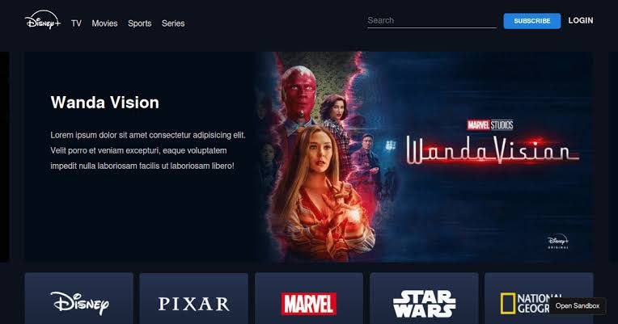
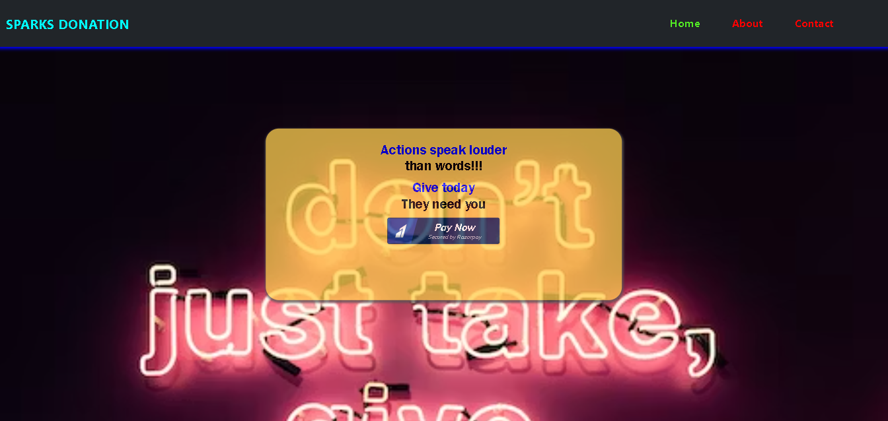

My Work

I developed a Hotstar clone using HTML,CSS AND JS.It was a wonderfull experience to do this project in AICTE Edunet Foundation as web developement intern.Learnt lot of things from this project

I thrived as a Spark Foundation web developer, crafting a basic banking app in 1 month. HTML, CSS, and JS melded seamlessly, culminating in a rewarding and educational experience.

Designing a to-do app using HTML, CSS, and JS was a creative process. Balancing aesthetics and functionality, I developed a practical tool for task management, refining my web development skills.